직업상담사-2급 (2018-08-19 기출문제)
1과목: 직업상담학
1. 내담자의 작업에 관한 상호역할관계의 사정 방법 중 질문을 통해 사정하는 방법에 해당하지않는 것은?
- 내담자에게 삶에서의 역할들을 원으로 그리기
- 내담자가 개입하고 있는 생애역할들을 나열하기
- 개개 역할에 소요되는 시간의 양을 추정하기
- 내담자의 가치들을 이용해서 순위 정하기
(정답률: 49%)

2. Roe는 가정의 정서적 분위기, 즉 부모와 자녀 간의 상호작용을 세 가지 유형으로 구분하였는데 이에 해당하지 않는 것은?
- 정서집중형
- 반발형
- 회피형
- 수용형
(정답률: 70%)
3. Williamson의 특성-요인 직업상담의 단계를 바르게 나열한 것은?
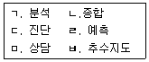
- ㄱ → ㄴ → ㄷ → ㄹ → ㅁ → ㅂ
- ㄷ → ㄱ → ㄴ → ㅁ → ㄹ → ㅂ
- ㄴ → ㄱ → ㄹ → ㄷ → ㅁ → ㅂ
- ㄱ → ㄷ → ㅁ → ㄴ → ㄹ → ㅂ
(정답률: 83%)
4. 내담자의 인지적 명확성을 위한 직업상담 과정을 바르게 나열한 것은?
- 내담자와의 관계 → 진로와 관련된 개인적 사정 → 직업선택 → 정보통합과 선택
- 직업탐색 → 내담자와의 관계 → 정보통합과 선택 → 직업선택
- 내담자와의 관계 → 인지적 명확성/동기에 대한 사정 → 예/아니오 → 직업상담/개인상담
- 직업상담/개인상담 → 내담자와의 관계 → 인지적 명확성/동기에 대한 사정 → 예/아니오
(정답률: 80%)
5. Ellis의 합리적 정서치료의 정신건강 기준에 관한 설명으로 옳은 것은?
- 사회적 관심: 자신의 삶에 책임감이 있고 독립적이다.
- 관용: 변화에 대해 수긍하고 타인에게 편협한 견해를 갖지 않는다.
- 몰입: 실수하는 사람들을 비난하지 않는다.
- 과학적 사고: 깊게 느끼고 구체적으로 행동할 수 있다.
(정답률: 53%)
6. 상담내용에 대한 비밀을 지키지 않아도 되는 상황을 모두 고른 것은?
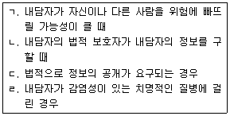
- ㄱ, ㄷ
- ㄱ, ㄴ, ㄹ
- ㄴ, ㄹ
- ㄱ, ㄷ, ㄹ
(정답률: 79%)
7. Bordin의 분류에서 다음에 해당하는 직업문제의 심리적 원인은?
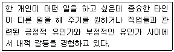
- 직업선택에 대한 불안
- 정보의 부족
- 의존성
- 자아 갈등
(정답률: 46%)
8. 다음 중 교류분석(transactional analysis)에서 주로 사용되는 개념은?
- 집단무의식
- 자아상태(부모-성인-아동)
- 전경과 배경
- 비합리적 신념
(정답률: 77%)
9. Gysbers가 제시한 직업상담의 목적에 관한 설명으로 옳은 것은?
- 생애진로발달에 관심을 두고, 효과적인 사람이 되는 데 필요한 지식과 기능을 습득하게 한다.
- 직업선택, 의사결정 기술의 습득 등이 주요한 목적이고, 직업상담 과정에는 진단, 문제분류, 문제 구체화 등이 들어가야 한다.
- 자기관리 상담모드가 주요한 목적이고, 직업정보 탐색과 직업결정, 상담만족 등에 효과가 있다.
- 직업정보를 스스로 탐색하게 하고 자신을 사정하게 하는 능력을 갖추도록 돕는다.
(정답률: 46%)
10. 직업상담의 기초기법에 대한 설명으로 틀린 것은?
- 수용: 내담자의 이야기에 주의집중하고 내담자를 인격적으로 존중하는 기법이다.
- 명료화: 내담자의 말 속에 포함되어 있는 불분명한 측면을 상담사가 분명하게 밝히는 기법이다.
- 해석: 내담자가 전달하는 이야기의 표면적 의미를 상담사가 다른 말로 바꾸어서 말하는 기법이다.
- 탐색적 질문: 내담자로 하여금 자신과 자신의 문제를 자유롭게 탐색하도록 허용함으로써 내담자의 이해를 증진시키는 개방적 질문 기법이다.
(정답률: 66%)
11. 형태주의 상담에 관한 설명으로 틀린 것은?
- 인간은 과거와 환경에 의해 결정되는 존재로 보았다.
- 개인의 발달초기에서의 문제들을 중요시한다는 점에서 정신분석적 상담과 유사하다.
- 현재 상황에 대한 자각에 초점을 두고 있다.
- 개인이 자신의 내부와 주변에서 일어나는 일들을 충분히 자각할 수 있다면 자신이 당면하는 삶의 문제들을 개인 스스로가 효과적으로 다룰 수 있다고 가정한다.
(정답률: 58%)
12. Crites의 분류유형 중 가능성이 많아서 흥미를 느끼는 직업들과 적성에 맞는 직업들 사이에서 결정을 내리지 못하는 유형은?
- 부적응형
- 우유부단형
- 다재다능형
- 비현실형
(정답률: 78%)
13. 인간중심적 상담에 적합한 내담자인지 알아보기 위해 상담사가 우선적으로 고려해야 할 점은?
- 상담자의 적극적인 개입 없이도 자신의 방식을 찾아갈 수 있는 내담자의 역량은 어느정도인가?
- 무의식적인 방어의 강도가 어느 정도이며 주로 사용하는 방어기제의 종류는 무엇인가?
- 개인과 환경 간의 상호작용에 의해 만들어진 성격 유형은 무엇인가?
- 내담자의 기억에서 우세하게 나타나는 주제의 내용과 양상은 무엇인가?
(정답률: 72%)
14. 일반적인 진로상담의 과정을 바르게 나열한 것은?
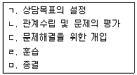
- ㄱ → ㄴ → ㄷ → ㄹ → ㅁ
- ㄴ → ㄱ → ㄷ → ㄹ → ㅁ
- ㄱ → ㄴ → ㄹ → ㄷ → ㅁ
- ㄴ → ㄹ → ㄱ → ㄷ → ㅁ
(정답률: 72%)
15. 다음 중 상담사가 상담목표를 설정할 때 고려해야 할 사항으로 가장 적합한 것은?
- 달성하기 어렵더라도 이상적인 관점에서 상담목표를 세운다.
- 내담자가 바라는 구체적이고 긍정적인 변화를 상담목표로 삼는다.
- 상담의 방향을 내담자와 공유하기 위해 추상적인 상담목표를 세운다.
- 내담자의 문제를 가장 잘 파악하고 있는 부모와 함께 상담목표를 설정한다.
(정답률: 83%)
16. 직업상담사에게 요구되는 역할과 가장 거리가 먼 것은?
- 직업정보를 분석하고 구인‧구직 정보제공
- 구직자의 직업적 문제를 진단하고 해결 및 지원
- 노동통계를 분석하여 새로운 직업전망을 예견하여 미래의 취업정보를 제공
- 직업상담실을 관리하며 구직자의 행동을 조정 및 통제
(정답률: 64%)
17. 생애진로사정의 구조에서 중요주제에 해당하지 않는 것은?
- 요약
- 평가
- 강점과 장애
- 전형적인 하루
(정답률: 73%)
18. 다음 중 단기상담을 진행하기에 가장 적합한 내담자는?
- 잦은 가출로 어머니가 상담을 의뢰한 17세의 고등학생
- 성격장애의 경향성을 보이는 19세의 고등학교 중도탈락자
- 중학교 이후 학교 부적응과 우울을 겪고 있는 18세의 고등학생
- 이성친구를 사귀는 데 도움을 받기 위해 상담을 신청한 15세의 중학생
(정답률: 82%)
19. 상호제지(reciprocal inhibition)의 원리를 사용한 행동치료기법은?
- 행동계약법
- 체계적 둔감법
- 자기교시법
- 자기통제법
(정답률: 61%)
20. 초기상담의 유형 중 정보지향적 면담에 관한 설명으로 옳지 않은 것은?
- 재진술과 감정의 반향 등이 주로 이용된다.
- '예', '아니오'와 같은 특정하고 제한된 응답을 요구한다.
- '누가, 무엇을, 어디서, 어떻게'로 시작되는 개방형 질문이 사용된다.
- 상담의 틀이 상담사에게 초점을 맞추어 진행된다.
(정답률: 52%)
2과목: 직업심리학
21. 직무 스트레스에 대한 대처 방안 중의 하나로 이솝우화에 나오는 여우와 신포도 이야기처럼 생각하는 것은?
- 투사(projection)
- 억압(repression)
- 합리화(rationalization)
- 주지화(intellectualization)
(정답률: 77%)
22. Holland의 인성이론에서 한 개인이 자기 자신의 인성유형과 동일하거나 유사한 환경에서 일하고 생활할 때를 의미하는 개념은?
- 일관성
- 변별성
- 정체성
- 일치성
(정답률: 69%)
23. Krumboltz의 사회학습이론에서 개인의 진로에 영향을 미치는 요인에 해당하지 않는 것은?
- 유전적 요인
- 부모 특성
- 환경 조건과 사건
- 과제접근 기술
(정답률: 62%)
24. 다음 중 실업자를 위한 프로그램과 가장 거리가 먼 것은?
- 직업전환 프로그램
- 인사고과 프로그램
- 실업충격 완화 프로그램
- 직업 복귀 훈련 프로그램
(정답률: 78%)
25. 역할 갈등의 발생에 대한 설명으로 틀린 것은?
- 직업에서의 요구와 직업 이외의 요구가 다를 때 발생한다.
- 개인이 수행하는 직무의 요구와 개인의 가치관이 다를 때 발생한다.
- 개인에게 요구하는 두 사람 이상의 요구가 다를 때 발생한다.
- 개인의 책임한계와 목표가 명확하지 않아서 역할이 분명하지 않을 때 발생한다.
(정답률: 55%)
26. Lofquist와 Dawis의 직업적응 이론에 나오는 4가지 성격양식 차원에 해당하지 않는 것은?
- 민첩성
- 역량
- 친화성
- 지구력
(정답률: 63%)
27. 다음에 해당하는 규준은?
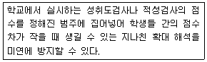
- 백분위 점수
- 표준점수
- 표준등급
- 학년규준
(정답률: 61%)
28. 지능을 맥락적 지능이론, 경험적 지능이론, 성분적 지능이론으로 구성된 것으로 가정한 지능모형은?
- Jensen의 2수준 지능모형
- Cattell-Hom의 유동성-결정성 지능모형
- Thurstone의 기본정신능력 모형
- Sternberg의 삼원지능모형
(정답률: 68%)
29. Roe의 욕구이론에서 제시한 직업군의 주요 특징으로 옳은 것은?
- 사업직(business): 대인관계가 중요하며 타인을 도와주는 행동을 취한다.
- 기술직(technology): 대인관계가 중요하며 사물을 다루는데 관심을 둔다.
- 서비스직(service): 사람의 욕구와 복지에 관련된 직업군이다.
- 단체직(organization): 조직 내에서 인간관계의 질을 강조하는 직업군이다.
(정답률: 65%)
30. 경력개발을 위해 종업원들에게 다양한 직무를 경험하게 함으로써 여러 분야의 능력을 개발시키려는 제도는?
- 사내공모제
- 조기발탁제
- 후견인제
- 직무순환제
(정답률: 79%)
31. 다음과 같은 유형의 직업세계에 가장 적합한 Holland의 성격유형은?
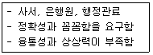
- 사회적 유형(S)
- 현실적 유형(R)
- 탐구적 유형(I)
- 관습적 유형(C)
(정답률: 76%)
32. 검사의 신뢰도 중의 하나인 Cronbach's α 가 크다는 것이 나타내는 의미는?
- 검사 문항들이 동질적이라는 것을 의미한다.
- 검사의 예언력이 높다는 것을 의미한다.
- 시간이 흐르더라도 검사 점수가 변하지 않는다는 것을 의미한다.
- 검사의 채점 과정을 신뢰할 수 있다는 것을 의미한다.
(정답률: 55%)
33. 직무분석 결과의 용도와 가장 거리가 먼 것은?
- 인사선발
- 교육 및 훈련
- 동료다면평가
- 직무평가
(정답률: 65%)
34. 스트레스에 관한 설명으로 틀린 것은?
- 스트레스 여부는 상황에 대한 개인의 주관적 해석에 의존한다.
- 스트레스 여부는 상황에 대한 통제 가능성에 의존한다.
- A유형에 비해 B유형의 사람들이 스트레스를 덜 받는 경향이 있다.
- 내적 통제자에 비해 외적 통제자가 스트레스 상황에 대한 대처능력이 뛰어나다.
(정답률: 64%)
35. 최대수행검사 중 적성검사와 성취검사를 구분하는 기준으로 가장 적합한 것은?
- 검사 문항의 유형
- 검사의 채점 방식
- 검사 실시의 목적
- 검사 규준의 산출 방식
(정답률: 59%)
36. 진로발달 이론가들 중에서 발달 단계별 특징 및 과제를 강조한 사람은?
- Parsons
- Holland
- Krumboltz
- Super
(정답률: 71%)
37. 진로정보처리 이론에서 진로문제해결의 과정을 의미하는 CASVE에 해당하지 않는 것은?
- 의사소통(communication)
- 분석(analysis)
- 종합(synthesis)
- 승격(elevation)
(정답률: 75%)
38. 직무분석을 위한 자료수집 방법에 대한 설명으로 틀린 것은?
- 관찰법은 직무의 시작에서 종료까지 많은 시간이 소요되는 직무에는 적용이 곤란하다.
- 면접법은 자료의 수집에 많은 시간과 노력이 들고, 수량화된 정보를 얻는데 적합하지 않다.
- 설문지법은 관찰법이나 면접법과는 달리 양적인 정보를 얻는데 적합하며 많은 사람들로부터 짧은 시간내에 정보를 얻을 수 있다.
- 중요사건법은 일상적인 수행에 관한 정보를 수집하므로 해당 직무에 대한 포괄적인 정보를 얻을 수 있다.
(정답률: 67%)
39. 한 연구자가 검사를 개발한 후 요인분석을 통해 그 검사가 검사개발의 토대가 된 이론을 잘 반영하는 지를 확인하였다. 이 과정은 무엇을 확인하기 위한 것인가?
- 내용(content)타당도
- 동시(concurrent) 타당도
- 준거(criterion-related)타당도
- 구성(construct)타당도
(정답률: 56%)
40. 직업적성검사(GATB)에서 사무지각적성(clerical perception)을 측정하기 위한 검사는?
- 표식검사
- 계수검사
- 명칭비교검사
- 평면도 판단검사
(정답률: 55%)
3과목: 직업정보론
41. 다음 ( )에 알맞은 것은?(관련 규정 개정전 문제로 여기서는 기존 정답인 2번을 누르면 정답 처리됩니다. 자세한 내용은 해설을 참고하세요.)
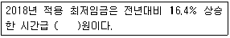
- 6,470
- 7,530
- 7,860
- 8,530
(정답률: 61%)
42. 다음은 직업정보 수집을 위한 자료수집방법을 비교한 표이다. ( )에 알맞은 것은?(오류 신고가 접수된 문제입니다. 반드시 정답과 해설을 확인하시기 바랍니다.)
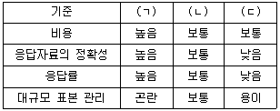
- ㄱ: 전화조사, ㄴ: 우편조사, ㄷ: 면접조사
- ㄱ: 면접조사, ㄴ: 우편조사, ㄷ: 전화조사
- ㄱ: 면접조사, ㄴ: 전화조사, ㄷ: 우편조사
- ㄱ: 전화조사, ㄴ: 면접조사, ㄷ: 우편조사
(정답률: 69%)
43. 한국표준산업분류의 적용원칙에 대한 설명으로 옳은 것은?
- 생산단위는 투입물과 생산공정을 배제한 산출물만을 고려하여 그들의 활동을 가장 정확하게 설명된 항목에 분류하여야 한다.
- 복합적인 활동단위는 우선적으로 세세분류를 정확히 결정하고, 순차적으로 세ㆍ소ㆍ중ㆍ대분류 단계 항목을 결정하여야 한다.
- 산업활동이 결합되어 있는 경우에는 그 활동단위의 주된 활동에 따라서 분류하여야 한다.
- 수수료 또는 계약에 의하여 활동을 수행하는 단위는 동일한 산업활동을 자기계정과 자기책임하에서 생산하는 단위와 다른 항목에 분류하여야 한다.
(정답률: 63%)
44. 워크넷(직업ㆍ진로)에서 학과정보를 계열별로 검색하고자 할 때 선택할 수 있는 계열이 아닌것은?
- 문화관광계열
- 교육계열
- 자연계열
- 예체능계열
(정답률: 67%)
45. 민간직업정보와 공공직업정보의 일반적 특성에 대한 설명으로 틀린 것은?
- 민간직업정보와 공공직업정보는 모두 유료로 구매하여 활용해야 한다.
- 민간직업정보는 불연속적이고 단기적이며, 공공직업정보는 연속적이고 장기적이다.
- 민간직업정보는 다른 정보와의 연계 및 비교 가능성이 낮고, 공공직업정보는 다른 정보와의 연계 및 비교 가능성이 높다.
- 민간직업정보에 조사ㆍ수록되는 직업의 범위는 제한적인 경우가 많으나, 공공직업정보는 전산업이나 직종에 걸쳐 포괄적인 경우가 많다.
(정답률: 77%)
46. 한국고용직업분류(2018)의 개정방향 및 주요 개정내용에 대한 설명으로 틀린 것은?
- 대분류 및 중분류 단위는 직능수준을 우선적으로 고려하였으며, 직능유형은 소분류 단위에서 고려되었다.
- 기존 24개의 중분류 중심 분류체계에서 10개의 실질적인 대분류 중심 체계로 전환하였다.
- 대분류, 중분류 단위의 직업명은 직업묶음이라는 의미로서의 '~직'으로 통일하여 사용하였다.
- 우선적으로 널리 통용되는 직업 명칭을 사용하였으며, 의미전달이라는 언어 수단 본래의 목적에 부합되도록 가능한 한 간명한 직업명을 사용하였다.
(정답률: 53%)
47. 다음 국가기술자격 종목이 공통으로 해당되는 직무분야는?
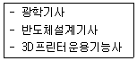
- 보건ㆍ의료
- 안전관리
- 환경ㆍ에너지
- 전기ㆍ전자
(정답률: 74%)
48. 직업성립의 일반요건과 가장 거리가 먼 것은?
- 윤리성
- 경제성
- 계속성
- 사회보장성
(정답률: 66%)
49. 국가 직업훈련에 관한 정보를 검색할 수 있는 직업훈련포털 정보망은?
- JT-Net
- T-Net
- HRD-Net
- Training-Net
(정답률: 76%)
50. Q-net(www.q-net.or.kr)에서 제공하는 국가기술자격 종목별 정보를 모두 고른 것은?
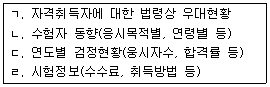
- ㄱ, ㄴ
- ㄷ, ㄹ
- ㄱ, ㄴ, ㄹ
- ㄱ, ㄴ, ㄷ, ㄹ
(정답률: 74%)
51. 워크넷에서 검색할 수 있는 우대 채용정보의 분류가 아닌 것은?
- 청년층 우대 채용정보
- 장년 우대 채용정보
- 여성 우대 채용정보
- 이주민 우대 채용정보
(정답률: 65%)
52. 한국표준산업분류의 분류기준이 아닌 것은?
- 산출물의 특성
- 투입물의 특성
- 생산단위의 활동형태
- 생산활동의 일반적인 결합형태
(정답률: 57%)
53. 청년취업성공패키지의 사전단계에서 향후 취업지원 경로 설정에 활용하기 위해 취업의욕 및 직무능력을 기준으로 분류한 취업지원 유형이 아닌 것은?
- A유형(통합지원형)
- B유형(훈련중심형)
- C유형(일경험중심형)
- D유형(취업지원중단형)
(정답률: 68%)
54. 기술기초이론 지식 또는 숙련기능을 바탕으로 복합적인 기초기술 및 기능업무를 수행할 수 있는 능력의 보유여부를 검정기준으로 하는 국가기술자격 등급은?
- 기능장
- 기사
- 산업기사
- 기능사
(정답률: 54%)
55. 직업정보의 일반적인 평가 기준과 가장 거리가 먼 것은?
- 어떤 목적으로 만든 것인가
- 얼마나 비싼 정보인가
- 누가 만든 것인가
- 언제 만들어진 것인가
(정답률: 77%)
56. 한국표준직업분류의 직업분류 원칙에 대한 설명으로 틀린 것은?
- 동일하거나 유사한 직무는 어느 경우에든 같은 단위직업으로 분류한다.
- 2개 이상의 직무를 수행하는 경우는 수행되는 직무내용과 관련 분류 항목에 명시된 직무내용을 비교ㆍ평가하여 관련 직무내용상의 상관성이 가장 높은 항목에 분류한다.
- 수행된 직무가 상이한 수준의 훈련과 경험을 통해 얻어지는 직무능력을 필요로 한다면, 가장 높은 수준의 직무능력을 필요로 하는 일에 분류한다.
- 재화의 생산과 공급이 같이 이루어지는 경우는 공급단계에 관련된 업무를 우선적으로 분류한다.
(정답률: 58%)
57. 국가기술자격 산업기사 등급의 응시자격 기준으로 틀린 것은?
- 고용노동부령으로 정하는 기능경기대회 입상자
- 동일 및 유사 직무분야의 산업기사 수준 기술훈련과정 이수자 또는 그 이수 예정자
- 응시하려는 종목이 속하는 동일 및 유사 직무분야의 다른 종목의 산업기사 등급 이상의 자격을 취득한 사람
- 응시하려는 종목이 속하는 동일 및 유사직무분야에서 1년 이상 실무에 종사한 사람
(정답률: 68%)
58. 한국표준산업분류의 분류구조 및 부호체계에 관한 설명으로 옳은 것은?
- 부호처리를 할 경우에는 알파벳 문자와 아라비아 숫자를 함께 사용토록 했다.
- 권고된 국제분류 ISIC Rev.4를 기본체계로 하였으나, 국내실정을 고려하여 독자적으로 분류항목과 분류부호를 설정하였다.
- 중분류의 번호는 001 부터 999 까지 부여하였으며, 대분류별 중분류 추가여지를 남겨놓기 위하여 대분류 사이에 번호 여백을 두었다.
- 소분류 이하 모든 분류의 끝자리 숫자는 01 에서 시작하여 99 에서 끝나도록 하였다.
(정답률: 63%)
59. 워크넷(직업ㆍ진로)에서 제공하는 직업선호도 검사 L형과 S형의 공통적인 하위검사는?
- 흥미검사
- 성격검사
- 생활사검사
- 구직동기검사
(정답률: 73%)
60. 직업정보 가공 시의 유의점에 대한 설명으로 틀린 것은?
- 직업정보의 이용자는 일반인이므로 이용자의 수준에 맞는 언어로 가공한다.
- 직업에 대한 장점만 제공하여 이용자들이 직업에 대한 비전을 갖도록 해야 한다.
- 가장 최신의 자료를 활용하되 표준화된 정보를 활용한다.
- 객관성이 없는 정보는 활용하지 않도록 한다.
(정답률: 78%)
4과목: 노동시장론
61. 다음 중 경쟁노동시장 경제모형의 기본 가정과 가장 거리가 먼 것은?
- 노동자와 고용주는 자유로이 시장에 진입하거나 시장을 떠나거나 한다.
- 노동자와 고용주는 완전정보를 갖는다.
- 사용자의 단결조직은 없고 노동자의 단결조직은 있다.
- 직무의 성격은 모두 동일하며 임금의 차이만 존재한다.
(정답률: 55%)
62. 노동의 임금탄력성에 관한 설명 중 옳은 것을 모두 고른 것은?
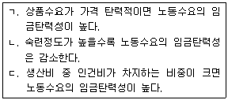
- ㄱ, ㄴ
- ㄱ, ㄷ
- ㄴ, ㄷ
- ㄱ, ㄴ, ㄷ
(정답률: 43%)
63. 다음 중 성과급 제도의 장점에 해당하는 것은?
- 직원 간 화합이 용이하다.
- 근로의 능률을 자극할 수 있다.
- 임금의 계산이 간편하다.
- 확정적 임금이 보장된다.
(정답률: 76%)
64. 노동자 7명의 평균생산량이 20단위일 때, 노동자를 추가로 1명 더 고용하여 평균생산량이 18단위로 감소하였다면, 이때 추가로 고용된 노동자의 한계생산량은?
- 4단위
- 5단위
- 6단위
- 7단위
(정답률: 61%)
65. 다음 중 수요부족실업에 해당되는 것은?
- 마찰적 실업
- 구조적 실업
- 계절적 실업
- 경기적 실업
(정답률: 62%)
66. 다음 중 소득재분배 정책과 가장 거리가 먼 것은?
- 최저임금제의 실시
- 누진세의 적용
- 간접세의 강화
- 고용보험의 실시
(정답률: 50%)
67. 다음 중 직무급 임금체계의 장점이 아닌 것은?
- 개인별 임금격차에 대한 불만 해소
- 연공급에 비해 실시가 용이
- 인건비의 효율적 관리
- 능력위주의 인사풍토 조성
(정답률: 53%)
68. 임금기금설(wage-fund theory)에 관한 설명으로 틀린 것은?
- 임금기금의 규모는 일정하므로 시장임금의 크기는 임금기금을 노동자의 수로 나눈 값이 된다.
- 임금기금설은 노동공급측면의 역할을 중시한 노동의 장기적인 자연가격결정론에 해당된다.
- 임금기금설은 고임금이 고실업률을 야기한다고 하여 고용이론에 영향을 주었다.
- 임금기금설에 따라 노동조합의 교섭력을 통한 임금의 인상이 불가능하다는 노동조합무용론이 제기되었다.
(정답률: 39%)
69. 노조의 단체교섭 결과가 비조합원에게도 혜택이 돌아가는 현실에서 노동조합의 조합원이 아닌 비조합원에게도 단체교섭의 당사자인 노동조합이 회비를 징수하는 숍(shop) 제도는?
- 유니온숍(union shop)
- 에이전시숍(agency shop)
- 클로즈드숍(closed shop)
- 오픈숍(open shop)
(정답률: 69%)
70. 다음 표를 이용하여 실업률을 계산하면 약 얼마인가?
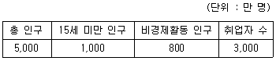
- 5.00%
- 6.25%
- 6.33%
- 6.67%
(정답률: 62%)
71. 산업구조 변동 시 성장산업의 기업들이 요구하는 기술과 사양산업에 종사하던 노동자들이 제공하는 기술이 서로 맞지 않아서 사양산업에 종사하던 노동자들이 성장산업으로 즉시 이동할 수 없어 발생하는 실업은?
- 마찰적 실업
- 구조적 실업
- 경기적 실업
- 직업탐색적 실업
(정답률: 68%)
72. 임금격차의 원인 중 경쟁적 요인이 아닌 것은?
- 인적자본량
- 보상적 임금격차
- 노동조합의 효과
- 기업의 합리적 선택으로서 효율성 임금정책
(정답률: 47%)
73. 단체교섭에서 사용자의 교섭력에 관한 설명으로 가장 거리가 먼 것은?
- 기업의 재정능력이 좋으면 사용자의 교섭력이 높아진다.
- 사용자 교섭력의 원천 중 하나는 직장폐쇄(lockout)를 할 수 있는 권리이다.
- 사용자는 쟁의행위기간 중 그 쟁의행위로 중단된 업무를 원칙적으로 도급 또는 하도급을 줄 수있다.
- 비조합원이 조합원의 일을 대신할 수 있는 여지가 크다면, 그만큼 사용자의 교섭력이 높아진다.
(정답률: 59%)
74. 임금상승에 따라 노동공급곡선이 후방굴절(상단부분에서 좌상향으로 굽어짐)을 보이는 이유는?
- 임금상승 시 대체효과가 소득효과보다 크기 때문이다.
- 임금상승 시 소득효과가 대체효과보다 크기 때문이다.
- 임금상승 시 소득효과와 대체효과가 같아지기 때문이다.
- 임금상승 시 노동자들이 일을 더하려고 하기 때문이다.
(정답률: 66%)
75. 이원적 노사관계론의 구조를 바르게 나타낸 것은?
- 제1차 관계: 경영대 노동조합관계
제2차 관계: 경영 대 정부기관관계 - 제1차 관계: 경영 대 노동조합관계
제2차 관계: 경영 대 종업원관계 - 제1차 관계: 경영 대 종업원관계
제2차 관계: 경영 대 노동조합관계 - 제1차 관계: 경영 대 종업원관계
제2차 관계: 정부기관 대 노동조합관계
(정답률: 60%)
76. 사회민주주의형 정치조직이 무력하여 국가차원보다 개별 기업단위의 복지제도가 광범위하게 시행되고 있는 마이크로 코포라티즘(micro-corporatism)이 특징인 국가는?
- 스페인
- 핀란드
- 일본
- 독일
(정답률: 57%)
77. 다음 중 노동조합의 노동공급권이 독점되는 숍(shop) 제도는?
- 클로즈드숍(closed shop)
- 유니온숍(union shop)
- 오픈숍(open shop)
- 에이전시숍(agency shop)
(정답률: 72%)
78. 다음 중 노동정책이나 제도에 관한 설명으로 틀린 것은?
- 소득정책은 근로자들의 소득을 증진시키기 위한 정책이다.
- 직업훈련정책은 주로 구조적 실업 문제를 해결하기 위한 정책이다.
- 최저임금제는 저임금근로자의 생활안정을 위한 것이다.
- 알선은 노사자율적 해결을 강조하는 노동쟁의 조정제도이다.
(정답률: 39%)
79. 효율임금이론에서 고임금이 고생산성을 가져오는 원인에 관한 설명으로 틀린 것은?
- 고임금은 노동자의 직장상실 비용을 증대시켜 노동자로 하여금 스스로 열심히 일하게 한다.
- 대규모 사업장에서는 통제상실을 사전에 방지하는 차원에서 고임금을 지불하여 노동자가 열심히 일하도록 유도할 수 있다.
- 고임금은 노동자의 사직을 감소시켜 신규노동자의 채용 및 훈련비용을 감소시킨다.
- 균형임금을 지불하여 경제 전반적으로 동일 노동ㆍ동일 임금이 달성되도록 한다.
(정답률: 62%)
80. 다음 중 경기침체 시 실업률이 높아질 때 경제활동인구가 감소되는 효과는?
- 대체효과(substitution effect)
- 부가노동자효과(added worker effect)
- 대기실업효과(wait-unemployment effect)
- 실망노동자효과(discouraged worker effect)
(정답률: 68%)
5과목: 노동관계법규
81. 고용상 연령차별금지 및 고령자고용촉진에 관한 법령상 우선고용직종에 관한 설명으로 옳은 것은?
- 고용정책심의회는 우선고용직종을 선정하고, 선정된 우선고용직종을 대통령령으로 명시하여야 한다.
- 고용노동부장관은 정당한 사유 없이 고용 확대 요청에 따르지 아니한 자에게 그 내용을 공표하거나 직업안정 업무를 하는 행정기관에서 제공하는 직업지도와 취업알선 등 고용 관련 서비스를 중단할 수 있다.
- 모든 사업주는 우선고용직종이 신설되거나 확대됨에 따라 신규인력을 채용하는 경우 고령자와 준고령자를 우선적으로 고용하여야 한다.
- 공공기관의 장은 그 기관의 우선고용직종에 관한 고용현황을 고용노동부령으로 정하는 바에 따라 매월 고용노동부장관에게 제출하여야 한다.
(정답률: 51%)
82. 고용정책 기본법령상 대량고용변동의 신고 시 이직근로자 수에 포함되는 자는?
- 수습 사용된 날부터 3개월 이내의 사람
- 자기의 사정 또는 귀책사유로 이직하는 사람
- 천재지변으로 인하여 사업의 계속이 불가능하게 되어 이직하는 사람
- 6개월 미만의 기간을 정하여 고용된 사람으로서 6개월을 초과하여 계속 고용되고 있는 사람
(정답률: 68%)
83. 남녀고용평등과 일ㆍ가정 양립 지원에 관한 법률상 차별에 관한 설명으로 틀린 것은?
- 사업주가 근로자에게 성별, 혼인, 가족 안에서의 지위, 임신 또는 출산 등의 사유로 합리적인 이유 없이 채용 또는 근로의 조건을 다르게 하거나 그 밖의 불리한 조치를 하는 경우를 차별이라고 한다.
- 사업주가 채용조건이나 근로조건은 동일하게 적용하더라도 그 조건을 충족할 수 있는 남성 또는 여성이 다른 한 성에 비하여 현저히 적고 그에 따라 특정 성에게 불리한 결과를 초래하며 그 조건이 정당한 것임을 증명할 수 없는 경우는 차별에 포함된다.
- 직무의 성격에 비추어 특정 성이 불가피하게 요구되는 경우라도 특정 성에게 불리한 결과를 초래할 경우 차별에 해당된다.
- 여성 근로자의 임신ㆍ출산ㆍ수유 등 모성보호를 위한 조치를 하는 경우는 차별에 해당되지 않는다.
(정답률: 65%)
84. 직업안정법상 유료직업소개사업에 관한 설명으로 옳은 것은?
- 등록된 유료직업소개사업자는 구직자에게 제공하기 위해 구인자로부터 선급금을 받을 수 있다.
- 등록을 하고 유료직업소개사업을 하려는 자는 원칙적으로 둘 이상의 사업소를 두어야 한다.
- 국외 유료직업소개사업을 하려는 자는 고용노동부장관에게 등록하여야 한다.
- 유료직업소개사업은 근로자의 주소지를 기준으로 국내 유료직업소개사업과 국외 유료직업 소개사업으로 구분한다.
(정답률: 59%)
85. 근로기준법령상 근로계약을 체결할 때 사용자가 근로자에게 반드시 서면으로 명시하여 교부해야 하는 사항이 아닌 것은?
- 취업의 장소
- 소정근로시간
- 연차 유급휴가
- 임금의 구성항목ㆍ계산방법ㆍ지급방법
(정답률: 50%)
86. 고용보험법령상 육아휴직 급여 신청기간의 연장 사유에 해당하지 않는 것은?
- 천재지변
- 형제의 질병
- 배우자의 직계존속의 부상
- 범죄혐의로 인한 구속
(정답률: 64%)
87. 다음 ( )에 알맞은 것은?
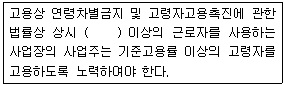
- 20명
- 100명
- 150명
- 300명
(정답률: 74%)
88. 근로기준법상 상시 4명 이하의 근로자를 사용 하는 사업 또는 사업장에 적용하는 규정으로만 짝지어진 것은?
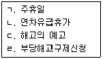
- ㄱ, ㄷ
- ㄷ, ㄹ
- ㄱ, ㄴ
- ㄱ, ㄹ
(정답률: 46%)
89. 남녀고용평등과 일ㆍ가정 양립 지원에 관한 법률상 출산전후휴가에 대한 지원에 관한 설명으로 틀린 것은?
- 국가는 출산전후휴가를 사용한 근로자 중 일정한 요건에 해당하는 자에게 그 휴가기간에 대하여 평균임금에 상당하는 출산전후휴가 급여를 지급하여야 한다.
- 출산전후휴가급여를 지급하기 위하여 필요한 비용은 국가재정이나「사회보장기본법」에 따른 사회보험에서 분담할 수 있다.
- 여성 근로자가 출산전후휴가급여를 받으려는 경우 사업주는 관계 서류의 작성ㆍ확인 등 모든 절차에 적극 협력하여야 한다.
- 출산전후휴가급여의 지급요건, 지급기간 및 절차 등에 관하여 필요한 사항은 따로 법률로 정한다.
(정답률: 54%)
90. 헌법상 근로의 권리와 관련하여 명시되어 있지 않은 것은?
- 최저임금제 시행
- 국가유공자의 유가족에 대한 우선적 근로기회 부여
- 여자ㆍ연소자의 근로에 대한 특별한 보호
- 산업 재해로부터 특별한 보호
(정답률: 55%)
91. 근로자직업능력 개발법령상 직업능력개발 훈련시설을 설치할 수 있는 공공단체의 범위에 해당하지 않는 것은?
- 한국산업인력공단
- 한국장애인고용공단
- 대한상공회의소
- 근로복지공단
(정답률: 69%)
92. 남녀고용평등과 일ㆍ가정 양립 지원에 관한 법률에 관한 설명으로 틀린 것은?(관련 규정 개정전 문제로 여기서는 기존 정답인 4번을 누르면 정답 처리됩니다. 자세한 내용은 해설을 참고하세요.)
- 사업주는 원칙적으로 육아기 근로시간 단축을 하고 있는 근로자에게 단축된 근로시간 외에 연장근로를 요구할 수 없다.
- 가족돌봄휴직 기간은 근로기준법상 평균임금 산정기간에서는 제외되고 근속기간에는 포함된다.
- 사업주가 근로자에게 육아기 근로시간 단축을 허용하는 경우 단축 후 근로시간은 주당 15시간 이상이어야 하고 30시간을 넘어서는 아니 된다.
- 사업주는 근로자가 배우자의 출산을 이유로 휴가를 청구하는 경우에 5일의 유급휴가를 주어야 한다.
(정답률: 68%)
93. 직업안정법상 직업안정기관의 장이 구인신청의 수리(受理)를 거부할 수 없는 경우는?
- 구인신청의 내용이 법령을 위반한 경우
- 구인신청을 구인자의 사업장소재지를 관할하는 직업안정기관에 하지 않은 경우
- 구인신청의 내용 중 임금 등 근로조건이 통상적인 근로조건에 비하여 현저하게 부적당하다고 인정되는 경우
- 구인자가 구인조건을 밝히기를 거부하는 경우
(정답률: 56%)
94. 기간제 및 단시간근로자 보호 등에 관한 법률에 규정된 내용으로 틀린 것은?
- 단시간근로자라 함은 기간의 정함이 있는 근로계약을 체결한 근로자를 말한다.
- 국가 및 지방자치단체의 기관에 대하여는 상시 사용하는 근로자의 수에 관계없이 기간제 및 단시간근로자 보호 등에 관한 법률을 적용한다.
- 사용자는 통상근로자를 채용하고자 하는 경우에는 당해 사업 또는 사업장의 동종 또는 유사한 업무에 종사하는 단시간근로자를 우선적으로 고용하도록 노력하여야 한다.
- 사용자는 가사, 학업 그 밖의 이유로 근로자가 단시간근로를 신청하는 때에는 당해 근로자를 단시간근로자로 전환하도록 노력하여야 한다.
(정답률: 47%)
95. 근로자직업능력 개발법상 기능대학에 관한 설명으로 옳은 것은?(관련 규정 개정전 문제로 여기서는 기존 정답인 3번을 누르면 정답 처리됩니다. 자세한 내용은 해설을 참고하세요.)
- 사립학교법에 따른 학교법인은 기능대학을 설립ㆍ경영할 수 없다.
- 지방자치단체가 기능대학을 설립ㆍ경영하려면 해당 지방자치단체의 장은 교육부장관과 협의를 한 후 고용노동부장관의 인가를 받아야 한다.
- 국가가 기능대학을 설립ㆍ경영하려면 관계 중앙행정기관의 장은 교육부장관 및 고용노동부장관과 각각 협의하여야 한다.
- 기능대학은 그 특성을 고려하여 다른 명칭을 사용할 수 없다.
(정답률: 67%)
96. 헌법상 근로3권과 그 제한에 관한 설명으로 틀린 것은?
- 근로조건의 향상과 무관한 근로3권의 행사는 제한될 수 있다.
- 공무원인 근로자는 법률이 정하는 자에 한하여 단결권ㆍ단체교섭권 및 단체행동권을 가진다.
- 법률이 정하는 주요방위산업체에 종사하는 근로자의 단체교섭권ㆍ단체행동권은 법률이 정하는 바에 의하여 제한될 수 있다.
- 근로3권은 국가안전보장ㆍ질서유지 또는 공공복리를 위하여 필요한 경우에 한하여 법률로써 제한될 수 있다.
(정답률: 50%)
97. 근로자직업능력 개발법령에 대한 설명으로 틀린 것은?
- 직업능력개발훈련은 15세 이상인 자에게 실시한다.
- 직업능력개발훈련은 집체훈련, 현장훈련, 원격훈련, 혼합훈련의 방법으로 실시한다.
- 근로자에게 종전의 직업과 유사하거나 새로운 직업에 필요한 직무수행능력을 습득시키기 위하여실시하는 직업능력개발 훈련을 전직훈련이라고 한다.
- 재해 위로금의 산정기준이 되는 통상임금은 산업재해보상보험법에 의한 최고 보상기준 금액 및 최저 보상기준 금액을 각각 그 상한 및 하한으로 한다.
(정답률: 48%)
98. 근로기준법의 기본원리와 가장 거리가 먼 것은?
- 강제 근로의 금지
- 근로자단결의 보장
- 균등한 처우
- 공민권 행사의 보장
(정답률: 36%)
99. 고용보험법상 자영업자인 피보험자의 실업급여의 종류가 아닌 것은?
- 직업능력개발 수당
- 광역 구직활동비
- 조기재취업 수당
- 이주비
(정답률: 52%)
100. 다음 ( )에 알맞은 것은?
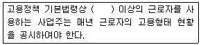
- 상시 50명
- 상시 100명
- 상시 200명
- 상시 300명
(정답률: 71%)